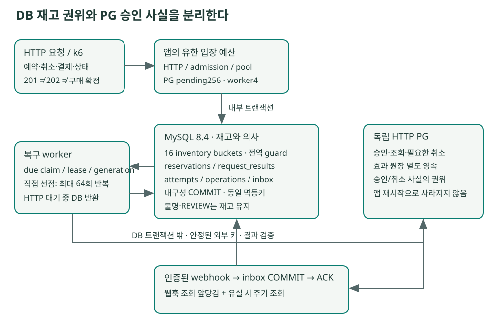
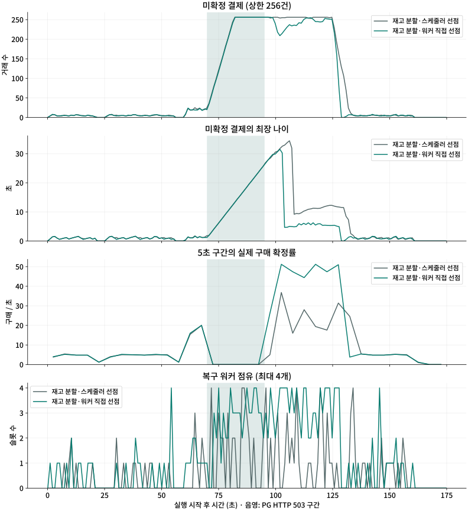
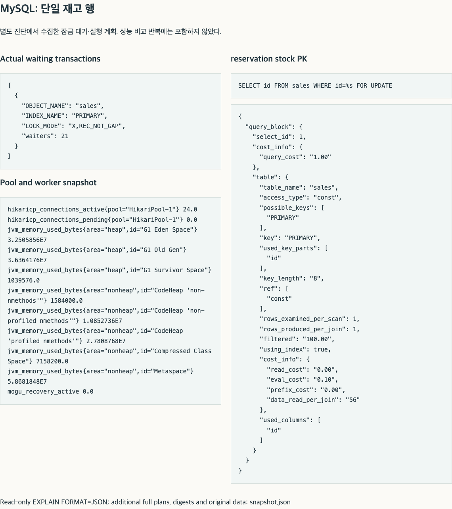
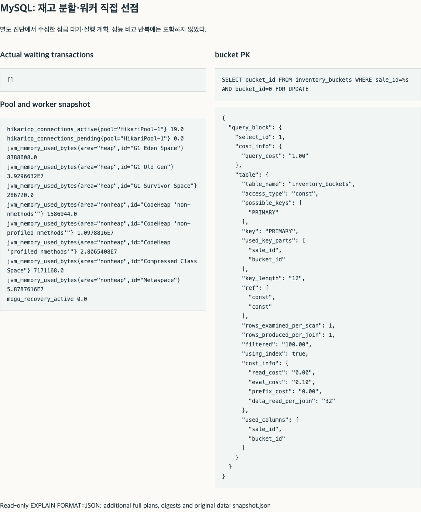

06 / EXECUTION AND RECOVERY
HTTP 연결 상한과 결제 작업 배분의 병목
재고 예약 뒤 구매가 늦어지는 원인을 PG 응답 시간만으로 설명할 수는 없었다. 모구시장은 DB에 예약을 커밋한 뒤 외부 PG 승인을 확인해 구매를 확정하는데, 예약·취소·만료·결제·조회가 겹치자 HTTP 연결 상한과 서버 내부 작업 배분에서도 대기가 발생했다. 같은 노트북에서 두 조건을 각각 바꿔 DB 실행 전의 대기와 워커 실행 대기를 분리했으며, 이후 배분 구조의 효과는 연결 설정을 맞춘 상태에서 비교했다.
같은 16개 재고 버킷·웹훅 처리와 워커 4개를 유지한 채, 스케줄러가 거래를 골라 넘기는 방식을 빈 워커가 직접 선점하는 방식으로 바꿨다. 양쪽 스케줄러 스레드를 2개로 맞춘 비교에서도 최종 구매 중앙값은 38.5% 늘었지만 관측 대상 CPU도 26.1% 증가했다. 작업이 없을 때의 선점 조회 증가와 장애 중 최장 지연은 별도의 비용으로 남았다.
혼합 부하의 유입률은 신규 사용자 수를 뜻하며, 각 사용자의 예약 후 행동은 결제 50%·취소 25%·만료 대기 25%로 배정했다. 단계별 입력과 지속 입력은 각각 명시된 기간으로 집계한다. 클라이언트는 결제 접수를 한 번 요청하며 서버의 PG 조회·승인 복구 재시도는 별도로 유지한다.
연결 상한 조정 후 확인한 워커 유휴 시간
워커가 비어 있어도 다음 작업을 고르는 스케줄러가 늦으면 실행을 이어갈 수 없다. 기준 스케줄러는 50ms마다 최대 4건을 DB에서 하나씩 선점해 전달하므로, 작업을 빨리 끝낸 워커도 다음 배분을 기다리고 선점 쿼리는 스케줄러 한 곳에서 직렬 실행된다. 연결 상한 512의 초당 100건 구간에서 선점은 약 51.5건/초, 구매 확정은 약 27.3건/초였다. 워커 작업의 누적 시간은 벽시계 1초당 약 1.04초, PG HTTP는 약 0.16초였다. 워커 4개가 충분히 활용되기 전에 배분 속도가 제한되는지 확인할 필요가 있었다.
PG의 apply_delay 0.3–1.0초는 승인 효과를 늦게 적용하는 설정으로, 그 시간만큼 HTTP 연결을 유지하지는 않으며 응답 유실 시에는 즉시 연결을 닫는다. HTTP 대기가 길 때의 동시성 한계는 response_delay와 query_delay를 설정한 별도 시험에서 확인했다.
워커가 다음 작업을 직접 선점하는 구조
워커 수를 늘리지 않고 배분 대기를 줄이기 위해, 작업을 마친 워커가 다음 거래를 직접 선점하도록 바꿨다. 재고 16분할과 웹훅 조회 앞당김을 유지한 채 기존 4개 실행 슬롯 안에서 선점→실행을 최대 64회 반복하고, 예정 시각이 지난 작업이 없거나 pause·interrupt가 발생하면 즉시 종료한다. 50ms 스케줄러는 빈 워커를 실행하는 역할만 맡는다. 각 선점과 상태 변경은 별도 트랜잭션이고, 외부 HTTP는 트랜잭션 밖에서 호출한다.
worker slot acquired
repeat at most 64 times:
claim one due attempt in its own transaction
if none: return
validate generation and persist execution permission
call PG outside database transaction
reconcile fact in another transaction
release slot승인 SQL이나 PG 요청은 묶지 않고 executor에 제출된 작업 전체를 semaphore로 제한했으며, DB에 저장된 결제 시도와 lease/generation, 고정 외부 멱등키, PREPARED/ARMED, 취소 의사, REVIEW 규칙을 유지했다. 프로세스가 종료돼도 실행 예정 작업은 DB에 남아 재기동 후 선점할 수 있다. DB fencing으로는 이전 워커의 외부 HTTP까지 차단할 수 없어 외부 멱등 계약도 계속 필요하다.
기존 스케줄러 하나 대신 최대 4개의 워커가 빈 조회를 실행하므로, 워커 직접 선점은 유휴 DB 조회를 늘릴 수 있다. 또한 적체가 있을 때는 더 많은 SQL과 PG 호출이 짧은 시간에 발생한다. 따라서 워커 수를 고정한 채 배분 방식의 처리량과 자원 비용을 비교했다.

스케줄러 스레드를 2개로 늘린 후 비교
스케줄러가 예약 32건을 만료 처리하는 동안 복구 작업 배분도 지연됐다. 이 설정 차이를 제거하려고 양쪽 스케줄러 스레드를 2개로 맞춘 뒤 기존 입력·연결 상한·워커 4개·DB·내구성을 유지해 3회씩 교대로 재측정했다. 아래는 공통 설정 보완 후의 결과이며, 스레드 1개로 측정한 앞선 p99와 따로 표시했다.
표는 실행별 지표의 중앙값과 최소–최대다. 구매 수는 워밍업을 제외한 입력 거래의 최종 상태, 승인→구매 지연은 PG 효과 시각과 DB 종결 시각으로 계산했다. 만료 p99는 워밍업을 포함한 EXPIRED 거래의 TTL 경과 이후 지연이다. 이 6회는 모두 Battery 전원에서 실행했고 발생기·VM·브라우저의 배경 비용과 전원 기록을 보존했다.
| 구현 | 최종 구매 | 승인→구매 p99 s | 최장 s | 만료 p99 s | 불명 1·2·3회차 | dropped 1·2·3회차 |
|---|---|---|---|---|---|---|
| 스케줄러 선점 | 1535.00 (1535.00–1536.00) | 26.31 (26.18–26.35) | 29.09 (28.93–29.44) | 0.30 (0.30–0.31) | 0/0/0 | 0/0/0 |
| 워커 직접 선점 | 2126.00 (2121.00–2127.00) | 3.68 (3.46–3.71) | 28.14 (27.60–29.07) | 0.36 (0.34–0.37) | 0/0/0 | 0/0/0 |
| 구현 | 단계 | 목표/s | 신규 예약/s | 접수 202/s | 구간 구매/s | 단계 이후 구매 |
|---|---|---|---|---|---|---|
| 스케줄러 선점 | 1단계 · 10명/초 | 10 | 10.03 (10.03–10.03) | 5.00 (5.00–5.00) | 4.80 (4.77–4.83) | 6.00 (5.00–7.00) |
| 스케줄러 선점 | 2단계 · 40명/초 | 40 | 40.00 (40.00–40.03) | 14.47 (14.43–14.47) | 5.93 (5.90–5.93) | 256.00 (256.00–256.00) |
| 스케줄러 선점 | 3단계 · 100명/초 | 100 | 100.03 (100.00–100.03) | 26.70 (26.70–26.77) | 26.63 (26.57–26.67) | 260.00 (257.00–260.00) |
| 스케줄러 선점 | 4단계 · 10명/초 (감속) | 10 | 10.00 (10.00–10.03) | 5.00 (5.00–5.00) | 6.87 (6.83–6.97) | 5.00 (5.00–6.00) |
| 워커 직접 선점 | 1단계 · 10명/초 | 10 | 10.03 (10.00–10.03) | 5.00 (5.00–5.00) | 4.83 (4.77–4.87) | 5.00 (4.00–7.00) |
| 워커 직접 선점 | 2단계 · 40명/초 | 40 | 40.03 (40.00–40.03) | 14.53 (14.53–14.53) | 6.00 (6.00–6.00) | 256.00 (256.00–256.00) |
| 워커 직접 선점 | 3단계 · 100명/초 | 100 | 100.03 (100.03–100.03) | 46.33 (46.17–46.37) | 47.13 (46.23–48.97) | 232.00 (172.00–260.00) |
| 워커 직접 선점 | 4단계 · 10명/초 (감속) | 10 | 10.03 (10.00–10.03) | 5.00 (5.00–5.00) | 4.83 (4.80–4.83) | 5.00 (5.00–6.00) |
| 구현 | 관측 대상 프로세스와 VM의 전체 CPU s | 혼합 CPU s/1000구매 | 기록 PG호출/구매 | k6 CPU s | k6 peak MiB | 풀 대기 peak |
|---|---|---|---|---|---|---|
| 스케줄러 선점 | 264.96 (264.47–265.85) | 162.06 (161.66–162.60) | 2.64 (2.64–2.64) | 9.65 (9.52–9.67) | 371.23 (368.81–371.34) | 0.00 (0.00–0.00) |
| 워커 직접 선점 | 334.13 (328.81–340.56) | 150.10 (147.65–153.34) | 2.52 (2.52–2.54) | 11.85 (11.60–11.89) | 376.55 (375.11–376.58) | 0.00 (0.00–0.00) |
스케줄러 스레드를 양쪽 모두 2개로 맞춘 뒤에도 워커 직접 선점의 최종 구매 중앙값은 38.5% 많았고 관측 대상 CPU 중앙값은 26.1% 높았다. 따라서 최초 차이를 만료 작업의 스케줄러 점유만으로 전부 설명할 수는 없으며, 동일한 재고 분할·웹훅 구조에서도 다음 50ms 배분을 기다리는 방식과 워커가 다음 작업을 이어 처리하는 방식 사이에 차이가 남았다. 재고 버킷 자체의 개선율은 여기에 더하지 않았다. 장애 중 남은 거래 때문에 최장 지연은 여전히 길었다.
CPU 관찰 구간에 워밍업과 유입 종료 후 처리가 들어 있으므로 분모에도 같은 구간의 전체 구매를 사용했다. 최종 구매 수와 각 시간 구간의 구매 확정률은 별도 지표다. PG 원장에 기록되기 전 503으로 거절된 호출은 앱 메트릭에서 확인했다. 구조 선택에는 p99 외에 만료 지연·최장 거래·미해결 수와 예약·편향·장애 시험 결과를 함께 사용했다.
작업이 없을 때의 조회·CPU 비용
유휴 비용은 attempts가 빈 상태에서 15초 워밍업 후 30초간 측정하되, HTTP 부하 없이 같은 4개 워커의 빈 선점 SQL과 앱 CPU를 각 1회씩 기록했다. 스케줄러 스레드 1개 조건의 결과이며 2개 조건의 유휴 비용은 별도 측정하지 않았다. 작은 CPU 차이를 운영 비용의 정확한 배율로 해석하기에는 표본이 부족하지만, 적체 해소 성능과 별개로 유휴 조회 증가를 확인할 수 있다.
| 구현 | 관측s | 빈 due SELECT | 조회/s | 앱 CPU s | 근거 |
|---|---|---|---|---|---|
| 스케줄러 선점 | 30.43 | 507 | 16.66 | 2.500 | 스케줄러 선점 결과 |
| 워커 직접 선점 | 30.53 | 1408 | 46.12 | 3.530 | 워커 직접 선점 결과 |
HTTP 연결 상한에 의한 요청 지연
초기 혼합 시험의 예약 타임아웃은 DB 커넥션 풀보다 앞선 HTTP 연결 단계에서 발생했다. 단계별 512 VU에 비해 Tomcat maxConnections가 128로 낮아 keep-alive 연결이 상한을 채웠고, 새 TCP 연결과 요청이 지연됐다. 초당 100 iteration에서 타임아웃이 발생해도 Hikari timeout은 0이었던 이유다. 연결 수·busy thread·DB 대기·클라이언트 connect 시간을 대조한 뒤 HTTP 연결 상한을 변경했으며, 이 설정 문제를 워커 구조의 한계와 구분했다.
| HTTP 연결 상한 | 100 입력 예약/s | 예약 timeout1050 | 성공 전체 p99 ms | 연결 peak | busy thread peak | pool 대기 peak | 조건 / 결과 |
|---|---|---|---|---|---|---|---|
| 128 | 44.80 | 1374 | 4814 | 128.0 | 20.0 | 6.0 | 단일 재고 행 · 측정 결과 |
| 512 | 100.03 | 0 | 12 | 340.0 | 5.0 | 0.0 | 단일 재고 행 · 측정 결과 |
두 실행에서 단일 재고 행, 입장 제한 12·풀 16·워커 4개, 혼합 입력과 PG 503 장애를 동일하게 유지하고 HTTP 연결 상한만 128→512로 바꿨다. 상한 512에서 관측된 최대 연결은 340개였고 예약 5,001개가 모두 취소·만료·구매 중 하나로 종결됐다. 각 1회의 설정 판별 이후, 구조 비교는 양쪽 연결 상한을 512로 맞춰 3회씩 반복했다.
k6의 http_req_duration은 sending+waiting+receiving으로, 연결 획득과 TCP 연결 시간을 포함하지 않는다. 따라서 연결 실패의 duration 0만 보면 지연을 놓칠 수 있는데, error_code 1050과 별도로 측정한 밀리초 해상도의 client_end_to_end에서는 약 5초 타임아웃이 확인됐다. 성공·429·타임아웃은 각각의 지연 분포로 집계했다. k6 v1.7.0 시간 정의 · 오류 코드 · 실행 버전 Tomcat10.1.55 연결 계약
HTTP 연결 상한을 512로 늘린 뒤에도 HTTP thread 48, accept backlog 32, API 입장 제한, DB pool, 미확정 결제 256건, 워커 수는 각각 제한했다. keep-alive 시간이나 동시 사용자 수가 달라지면 필요한 연결 수를 다시 산정해야 한다. 거절 응답에도 TCP 자원이 필요하므로 애플리케이션 semaphore와 HTTP 계층의 상한을 함께 관리한다.
동일 자원에서 스케줄러 선점과 워커 직접 선점 비교
두 구현 모두 16버킷·웹훅 조회 앞당김·admission24/pool48/worker4/HTTP512를 사용했다. 워밍업 10/s20초 뒤 10→40→100→10 iteration/s 각 30초,70초부터 PG HTTP503을 25초 주입했다. 다만 이 입력은 버킷 16개가 결제 8개·취소 4개·만료 4개로 행동과 결합돼 있었으므로, 두 배분 구조의 차이는 해당 조건 안에서 해석해야 한다. 입력은 취소 25%·만료 25%·결제 50%이며 결제 시도 202가 모두 구매가 된다는 가정은 하지 않는다. 종료 후 HELD의 TTL와 결제 원장을 함께 관찰하고 독립 감사했다. 스케줄러 선점 구조의 첫 실행은 실제 PG 인증 준비용 DB가 동시에 실행돼 자원 조건이 달랐으므로, 비용 비교에서는 제외하고 같은 조건으로 다시 측정했다. 표는 3회 중앙값(최소–최대), p99는 실행별 p99의 범위이며 합친 모집단 p99가 아니다.
| 구현 | 측정 신규 예약 | 최종 구매 | 승인→구매 p99 s | 최장 s | 해소 거래 점유 item.s | 미해결 1·2·3회차 | 관측 대상 프로세스와 VM의 CPU s | 기록 PG호출/구매 |
|---|---|---|---|---|---|---|---|---|
| 스케줄러 선점 | 4801.00 (4777.00–4801.00) | 1400.00 (1352.00–1521.00) | 26.70 (25.31–27.69) | 30.20 (28.11–30.21) | 47687.56 (45730.19–48015.24) | 0/0/0 | 247.66 (246.89–269.08) | 2.69 (2.64–2.72) |
| 워커 직접 선점 | 4802.00 (4802.00–4804.00) | 2075.00 (2074.00–2098.00) | 3.69 (3.59–3.78) | 28.58 (28.49–28.87) | 36437.35 (36040.50–36447.78) | 0/0/0 | 330.38 (327.05–331.69) | 2.54 (2.52–2.55) |

p99가 줄어도 가장 늦은 거래나 미해결 거래가 남을 수 있어 최장 지연과 미해결 수를 함께 표시했다. PG 호출/구매는 해당 거래의 원장에 기록된 CONFIRM·QUERY·CANCEL 합계다. 전역 503 제어에서 원장 저장 전에 거절된 호출은 이 합계에 없으므로, 전체 앱 호출 시도는 mogu_pg_calls_total도 함께 확인한다.
관측 대상 프로세스와 VM의 CPU는 앱·PG·k6·관측기와 Docker VM/backend를 합한 근사값이다. guest DB cgroup을 다시 더하지 않는다. Chrome·작업 도구 등 다른 호스트 프로세스는 이 실험 구성의 CPU 합에 넣지 않았다. r04 중 실제 인증 브라우저가 사용됐고 top20 표본의 Chrome 합 peak43.4%/평균 2.3%였다. 다른 반복도 Chrome peak4.0~35.1%가 관측돼 완전히 정지된 데스크톱 비교는 아니다. 표본별 원본을 보존하며 이를 전용 머신의 최대 성능으로 확대하지 않는다. 5초 표본의 시작·끝과 미분리 커널 비용은 남으며, 더 많은 구매를 처리한 실행의 총 CPU가 높은 것과 거래당 효율 악화는 구분해야 한다. 재고 점유에는 구매 전에 걸린 시간이 포함되며 구매 확정은 재고 반환을 의미하지 않는다.
실행 계획과 장애 회귀
적체 처리 종료 뒤 수집한 아래 DB EXPLAIN 스냅샷에서 재고는 PK 접근, 예정 작업 조회는 workflow 조건과 next_at 정렬을 사용했다. 실행 계획과 별도로 실제 잠금 대기는 실행 중 data_lock_waits 표본에 보존했다. 종결 이력이 늘어날 때의 examined rows와 조회 비용은 장기 운영에서 추가로 관리할 항목이다. 실제 DB EXPLAIN·지표 스냅샷


두 구현에 거래 계약, 확장 장애, 잠금·풀 포화, 다중 인스턴스, 버킷 보존, Toss 웹훅 형식 시험을 적용했다. 실제 프로세스 종료, DB 장애, 늦은 승인과 취소, 오래된 워커, 다중 JVM 경쟁을 포함한다. PG 멱등 보관 기간이 지난 거래는 REVIEW로 보존하고 재고 점유를 유지했다.
후속 비교와 해석 범위
이 글 이후에는 종결 충돌 보존과 KRW 금액 검증을 공통 수정하고, 기존 두 구조와 만료 배치 구조를 결제 재시도·최초 결제 고객·재고 반환 조건에서 다시 비교했다. 최신 결과는 아래 후속 글에서 다루되, 앞선 결제 슬롯 관리 구조 비교의 15% 기준과 후속 비교의 사전 기준이 다르므로 서로 다른 조건의 결과를 합산하지 않았다. 결제 재시도·최초 결제 고객의 구매 결과·재고 반환 비교
후속 비교에서는 종결 거래의 외부 명령 허가 결함을 모든 비교군에 수정하고 사용자·버킷·행동·PG 장애 입력을 독립화했다. 100/400건·초를 각각 독립 3회 측정한 결과와 결함 수정은 아래 글에 정리했다. 선행 단계형 혼합 시험의 입력은 16개 버킷 중 결제 8개·취소 4개·만료 4개로 행동이 묶여 있어, 당시 수치와 선택은 그 조건에 한정해 해석한다. 선행 구매 결과와 해당 비교의 선택 · 종결 거래 결함과 수정